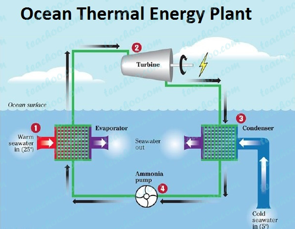
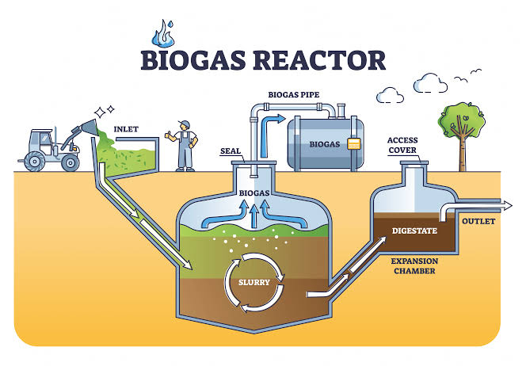

🌠Renewable Energy System Designs — Portfolio by Rohit Kumar
☀️ Activity 1: Rooftop Solar PV System (5 kW)

- 🔆 Source of energy: Solar irradiance from the sun is captured using rooftop photovoltaic (PV) modules rated for approximately 5 kW. These panels use the photovoltaic effect to convert sunlight into DC electrical energy efficiently.
- ⚙️ Conversion process: The DC power generated by PV modules is collected via DC combiners and fed into a smart inverter with MPPT (Maximum Power Point Tracking) to maximize power output. The inverter converts DC to AC power synchronized to the grid frequency. A Li-ion battery bank stores excess energy for use during night-time or grid outages, while a BMS ensures optimal performance and safety.
- 🡠Output / utilization: The generated AC power supplies lighting, fans, appliances, and other household loads. Surplus power is exported to the grid through a bi-directional net meter, helping lower electricity bills and promoting decentralized generation.
- 🌿 Real-world relevance: Rooftop PV systems promote energy independence, lower emissions, and help residential consumers actively contribute to national renewable energy targets. They are key to achieving sustainable, resilient urban infrastructure.
- ğŸ› ï¸ Design notes: The design includes careful string sizing (Voc/Isc checks), grounding, lightning protection, and inverter isolation switches. Battery sizing considers desired autonomy and critical circuit loads during outages.
🌤️ Activity 2: Hybrid Solar–Wind System for Rural Health Clinic

- 💨 Source of energy: This system integrates two renewable sources — solar irradiance captured by PV panels and kinetic wind energy harvested by a 3–5 kW horizontal-axis turbine. The hybrid setup ensures continuous power supply even when one source is weak.
- ⚙️ Conversion process: The PV panels produce DC power, while the wind turbine generates variable-frequency AC, which is rectified and conditioned. A hybrid charge controller manages both inputs, charging the battery bank and preventing overcharging. The inverter supplies AC power and automatically switches between grid, battery, or generator backup as needed.
- 🥠Output / utilization: The system powers essential clinic loads such as vaccine refrigeration units, sterilizers, diagnostic devices, and emergency lighting. Battery storage ensures autonomy for several hours, crucial for remote healthcare centers.
- 🌠Real-world relevance: Hybrid systems improve reliability, reduce diesel dependency, and ensure round-the-clock operation for life-saving equipment. They enable clean, resilient, and cost-effective rural healthcare delivery.
- 📠Design notes: The design is tailored to the clinic’s load profile, regional solar radiation, and wind patterns. It includes surge protection, grounding, and remote monitoring for system diagnostics and maintenance.
🌊 Activity 3: Ocean Thermal Energy Conversion (OTEC) System

- 🌡️ Source of energy: OTEC utilizes the natural temperature difference between warm surface seawater (~27°C) and cold deep seawater (~5°C) in tropical regions. This continuous thermal gradient serves as a stable energy source.
- ⚙️ Conversion process: Warm seawater transfers heat to a low-boiling working fluid (like ammonia) in the evaporator, vaporizing it. The vapor expands through a turbine connected to a generator, producing electricity. Cold deep seawater then condenses the vapor back into liquid form, completing the cycle. Pumps circulate both seawater streams in closed loops.
- 🔋 Output / utilization: The system produces clean, steady baseload electricity for island microgrids. Additionally, OTEC plants can co-produce desalinated water, support aquaculture with nutrient-rich discharge, and enable seawater air conditioning.
- 🌠Real-world relevance: OTEC offers a continuous renewable power source, ideal for tropical coastal areas with limited land and costly fossil imports. Its by-products—freshwater, cooling, and aquaculture—enhance sustainability and local livelihoods.
- 🧠Design notes: Engineering considerations include deep-water pipeline design, corrosion prevention, marine ecosystem protection, and economic integration with desalination or tourism facilities for financial viability.
♻️ Activity 4: Biogas Power Generation System

- 💩 Source of energy: Organic waste — cattle dung, crop residue, and food waste — is decomposed anaerobically by bacteria in a sealed digester. The process generates biogas (mainly methane and carbon dioxide) and a nutrient-rich slurry.
- ⚙️ Conversion process: The biogas is collected in a flexible gas holder and directed to a biogas engine generator, where methane combustion drives a generator to produce electricity. The digestate slurry is extracted and used as organic fertilizer.
- 🔋 Output / utilization: The generated electricity powers household or farm loads, while the slurry supports agriculture. The biogas can also be used for cooking or upgraded to biomethane for use in vehicles or grid injection.
- 🌿 Real-world relevance: Biogas systems transform waste management into a clean energy opportunity. They lower methane emissions from open decomposition, cut fossil fuel dependence, and promote circular rural economies.
- 📠Design notes: A typical small-scale digester of 6–10 m³ processes waste from 5–10 cattle. The system includes temperature control (30–35°C), proper feedstock ratio management, and leak-proof dome construction for safety and performance.